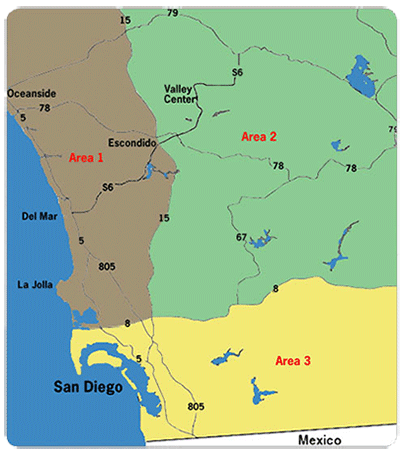

SDAR is pleased to offer members several different opportunities to promote their listing. Utilize one of our weekly caravan tours, post an open house on SDAR.com, or advertise your flyer at SDAR service centers.
{mooblock=San Diego County Tours & Caravans }
Local San Diego Caravan and Tour information is updated regularly, and to the best of our ability. If you have changes in time / location / contact information for a local caravan, please contact Kelly Mitchell or call 858-715-8067. For Caravan and Tour information in other areas of the county, please visit Sandicor's website.
Promoting local events or information? SDAR can post a PDF of a flyer or promotional information about events sponsored by local caravans / tours. E-mail the PDF to Caravans@sdar.com and SDAR will include it in the appropriate Caravan calendar information.

{/mooblock}
{mooblock=Submit an Open House }
SDAR offers you opportunities to advertise your open houses for free each week. Each week you may submit listings which we will post on our website.
To submit an Open House online, click here.
To view Open House Listings, click here.
{/mooblock}
{mooblock=Listing Boards }
SDAR members can now promote property listings at SDAR Service Centers. SDAR understands the competitive real estate environment and wants to help members expand their marketing reach (for FREE). Here's how to participate:
Email listingboard@sdar.com and provide the following:
Once SDAR receives your email request, you will be contacted by a Member Services Representative who will confirm receipt of your materials. While it's free to advertise your listing, a nominal $5 printing fee will apply to cover print costs for producing 40 flyers. REALTOR® Plus + members will receive a 15% discount off this printing fee.
Payments can be made by credit card and will be processed when a SDAR Member Services Representative contacts you to confirm receipt of your materials. You're welcome to deliver 40 flyers to SDAR's Kearny Mesa Service Center to avoid this fee.
Listing board advertising requests will be processed on a first-come, first-served basis. Requests submitted by the 25th of each month will be scheduled for promotion during the following month (based on availability). At the close of the promotional period, remaining flyers will be removed. As a courtesy to your fellow SDAR members, please notify SDAR if your property has sold.
Space is limited so secure your spot now!
*Listing flyer content must adhere to Sandicor® MLS rules and regulations.
{/mooblock}